多校-CFALR：Collaborative Filtering-Augmented Large Language Model for Personalized Fashion Outfit Recommendation
这篇论文研究个性化时尚套装推荐，完整标题是 CFALR: Collaborative Filtering-Augmented Large Language Model for Personalized Fashion Outfit Recommendation。论文 arXiv 编号为 2606.13001，发布日期为 2026-06-11，主类别是推荐算法。一作 Yujuan Ding 来自 The Hong Kong Polytechnic University，合作作者来自电子科技大学、Singapore Management University、同济大学、National University of Singapore 和香港理工大学；由于本次 worker 输入指定目录为“多校-CFALR”，本文沿用该目录名，但正文中仍按论文首页标注一作主机构和合作机构。唯一论文入口链接：arXiv:2606.13001。代码/项目页状态：本轮在论文首页与 PDF 正文中未核验到独立代码仓库或项目页链接，因此不写成已开源。
1. 背景和问题
个性化 outfit recommendation 比普通 item recommendation 更难，原因不只是候选空间更大，而是目标本身同时包含“用户会不会喜欢”和“这些衣物能不能搭在一起”两个约束。普通商品推荐往往只需要在用户、item 和上下文之间估计一个偏好分数；时尚套装推荐却要在一个集合上做决定：上衣、裤装、鞋、外套、裙装、连衣裙等类别之间需要满足审美、功能、季节和场景上的兼容性，同时又不能脱离某个用户的历史偏好。论文把这件事放进电商和社交媒体场景来讲，是合理的：真实平台里新款更新快、图片细节丰富、用户交互稀疏，而且一个可售卖的 outfit 不是“把若干高分 item 相加”这么简单。若只按单品偏好排序，模型可能给出用户喜欢但互相冲突的颜色和品类；若只按通用搭配模板生成，模型可能给出好看但不个性化的套装。
论文指出的第一类基线是 collaborative filtering。CF 模型擅长从历史交互中学习用户、item 和 item-pair 的隐式关系。例如，CPTM 这类方法可以用用户和 item pair 的 translation-style 匹配分数刻画“某个用户在已有 item 条件下是否会接受另一个 item”。这类信号在推荐任务里非常有价值，因为它直接来自行为数据，而不是从自然语言描述里间接猜测偏好。但 CF 的问题也很典型：用户与 outfit 的观测交互稀疏时，item 只出现一次或很少出现时，模型就很难学出稳定的 latent pattern；新商品 cold-start 时尤其明显。更关键的是，outfit 生成不是从固定候选中选一个 item 就结束，而是要连续组合多个 item，搜索空间随候选集合和 outfit 长度快速扩大。传统 CF 即使能给 item-pair 打分，也未必具备理解复杂条件、自然语言属性和开放式组合的能力。
第二类路线是模板化 outfit generation。它的想法是先用固定 template 约束 outfit 的类别结构，例如 top-pants-shoes 或 top-skirt-outerwear-shoes，再在模板槽位内选择 item。模板能缩小组合空间，也让生成更像“完整套装”，但它依赖训练集中已经观察到或统计得到的模板集合。论文强调，这会带来 out-of-distribution 问题：真实时尚趋势变化很快，平台商品更新也快，固定模板不一定覆盖未来流行搭配；更糟的是，模板本身可能不完整或不常见，使得模型在某些类别组合上表现异常。模板化方法还有一个隐含缺陷：如果模板主要来自全局搭配频率，它可能更偏向“常见 outfit”，而不是“这个用户真正喜欢的 outfit”。
第三类路线是 LLM 或 VLM 推荐。大模型能把 item 文本、图像语义、用户历史描述和任务指令放在同一个语言推理框架里，这对时尚推荐有明显吸引力。时尚 item 的视觉差异很细：材质、轮廓、图案、正式程度、风格语义很难完全由 item ID 表达。LLM/VLM 对语义、属性和组合描述的理解，可以缓解 cold-start 和稀疏交互问题，也能把“你是时尚购物助手”这样的任务目标编码进 prompt。但论文也明确指出，纯 LLM 推荐有一个空间错位问题：LLM 的语义空间基于 token ID 和语言预训练，推荐任务的交互空间基于用户 ID、item ID 和历史行为。一个语言模型知道“白色衬衫适合搭牛仔裤”，不等于它知道用户 462 在平台历史上更偏爱哪类鞋，也不等于它能稳定从候选 item ID 中选中 ground-truth item。这个错位解释了为什么 off-the-shelf LLM 在论文实验中通常不如专门训练过的推荐模型。
CFALR 的核心问题意识就在这里：能不能让 LLM 负责复杂条件理解和语义泛化，让 CF 负责行为空间里的偏好与兼容性，同时避免把二者粗暴拼接成一个不可训练的系统？论文提出的答案是两个层面的融合。训练和编码层面，它把用户与 item 写成自然语言交互描述，同时把视觉特征和 CF embedding 投影到 LLM token embedding 空间，形成 hybrid user/item encoding。推理层面，特别是在 personalized outfit generation 这种输入很短的场景，它不完全相信 LLM 的生成概率，而是在输出层把 LLM 概率和 CF 模型概率按权重插值。这种设计的直觉很清楚：当 prompt 给出丰富上下文、候选 item 和用户历史时，LLM 的语义能力更有用；当 POG 只给用户和一个 anchor item，要连续选出多个 item 时，CF 对 item-level interaction pattern 的直接建模更可靠。
论文设置了两个任务来覆盖这两个侧面。Personalized Fill-In-The-Blank，简称 P-FITB，是给定用户、部分 outfit 和候选 item，选择最适合补全的 item。这个任务更像一个受限选择问题，适合检验模型能否同时理解用户和已有 item 的搭配关系。Personalized Outfit Generation，简称 POG，是给定用户和一个 anchor item，从候选集合中逐步生成完整 outfit。这个任务更接近实际生成：模型不仅要选对 item，还要决定生成长度、避免重复类别、保持整体兼容。CFALR 的贡献不是宣称 LLM 能替代 CF，而是把 LLM 和 CF 的适用区间拆清楚，再在编码、训练和推理三个位置设计桥接机制。
2. 方法
2.1 总体架构：把推荐问题改写成 LLM 可处理的条件选择
CFALR 的整体流程可以理解为四步：先从原始时尚推荐数据里抽取非文本特征，再把用户和 item 编码成包含文本、视觉与 CF 的 hybrid representation，然后用自然语言 prompt 表达 user-outfit interaction，最后让 LLM 在候选 item 上做推荐，并在 POG 推理时引入 CF-augmented generation。论文中的 Figure 1 正好把这条信息流画出来：左下角是 fashion outfit recommendation data 和 multi-relational fashion matching graph，右下角是视觉内容与视觉模型，中间是 feature projection 和 LLM tokenizing/embedding，上方是 user、anchor items、candidate items 组成的 prompt，右侧是 CF-augmented outfit generation。
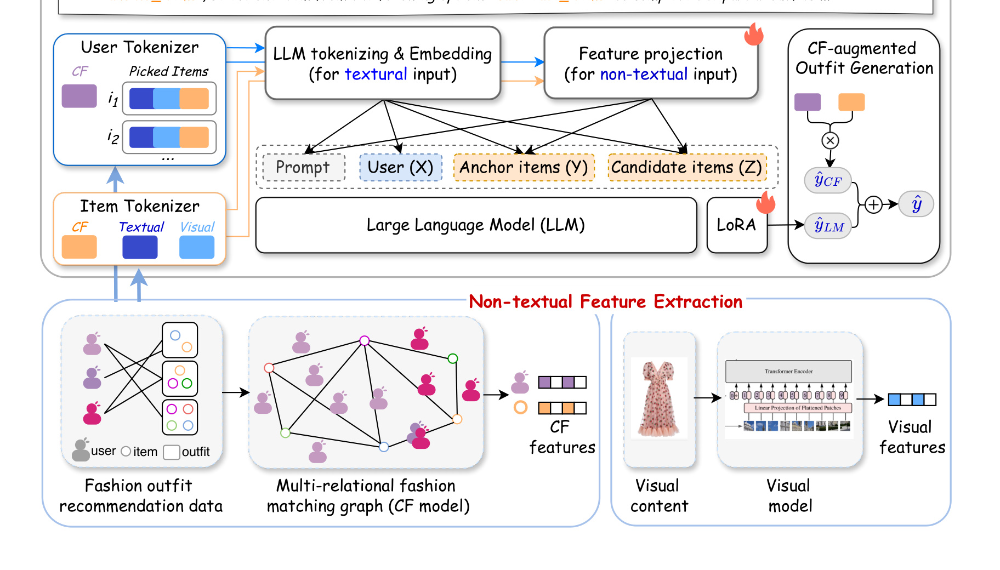
这张图的关键不是“把很多模块堆在一起”，而是说明每一类信息进入 LLM 的路径不同。文本描述仍然走 LLM 自己的 tokenizer 和 embedding 层；视觉特征和 CF embedding 不属于自然语言 token，不能直接塞进 Vicuna，所以要经过 trainable projection layer 投到 LLM token embedding 维度。用户也不是一个裸 ID，而是由历史交互 item 的 hybrid embedding 加上 user CF feature 表示。这样做的直接结果是，LLM 接收到的上下文不再只是“用户喜欢若干商品”的字符串，而是一个混合 token 序列：里面既有语言语义，也有视觉内容，也有由 CF 预训练得到的行为空间坐标。图中右侧的 CF-augmented generation 还提示了另一层设计：训练后的 LLM 输出不是最终答案的唯一来源，POG 阶段会把 CF 模型分数作为输出层插值的一部分。
论文把基础任务写成 personalized fashion outfit recommendation。设 outfit 集合为 O，每个 outfit 是多个 item 的集合；用户集合为 U，item 集合为 I；用户 u 与 outfit o 的交互写作 x_{u,o}，并且可以进一步拆成用户与 outfit 内每个 item 的交互。这个拆分很重要，因为论文既要处理 outfit-level compatibility，又要把 item-level preference 用在 P-FITB 和 POG 中。P-FITB 给定用户 u、partial outfit I_p 和 candidate item set I_c，目标是在候选中选出能补全 outfit 的 target item i_t。POG 给定用户 u 和 anchor item i_a，目标是从候选集合中选出多个 item 组成完整 outfit。P-FITB 更偏判别式补空，POG 更偏逐步生成。
CFALR 把这个推荐问题改写为 LLM 可处理的 conditional choice。prompt 的角色不是简单描述任务，而是把用户、anchor items 和 candidate items 三部分放进统一输入：“你是时尚购物助手，目标用户已经选择了若干 items，请从候选列表里选择一个 item，使其既满足用户偏好又能与已选 items 搭配。”这个 prompt 有三个 placeholder：<user>、<anchor_items>、<candidate_items>。真正困难的是这些 placeholder 不是普通文本，而要填入 hybrid descriptions：用户用 z_u 表示，anchor/candidate items 用 z_i 表示。也就是说，prompt 是外壳，hybrid encoding 才是 CFALR 把推荐信号接入 LLM 的核心。
2.2 CF 预训练信号：为什么不是只用文本和图像
论文没有从零发明 CF 模型，而是采用 CPTM 作为 multi-relational CF model。CPTM 用 user-item-item triplet 数据训练，适合刻画“用户 u 在 item i 条件下是否会选择 item j”这种三元关系。CFALR 先用 user-outfit interaction 数据适配出 triplet，再训练 CPTM，随后取 CPTM 的 user/item latent embeddings 作为 CF features。这里要注意一个边界：CFALR 不是直接把 CPTM 当最终推荐器，而是把 CPTM 学到的 latent representation 作为 LLM 输入的一部分，并在 POG 输出层再用 CPTM 概率辅助生成。
CPTM 的训练目标在论文中写成：
符号解释：L_{BPR} 是 Bayesian Personalized Ranking 风格的 pairwise loss；s(u,i,j) 表示用户 u 在已有 item i 的条件下对目标 item j 的个性化匹配分数；k 通常代表相对负样本或较不匹配 item。这个目标让模型学会把正向搭配/偏好三元组排在负向三元组之前。对 CFALR 来说，重要的不是 BPR 形式本身，而是它让 user embedding 和 item embedding 带有行为空间里的相对偏好信息，这些信息是 LLM 文本预训练不一定有的。
CPTM 的打分函数写成：
符号解释：e_u 是用户 u 的 latent embedding，e_i 是上下文 item i 的 embedding，e_j 是目标 item j 的 embedding，\beta_j 是目标 item 的 bias，\lVert\cdot\rVert_2 是二范数距离。这个式子有 translation matching 的味道：如果用户向量 e_u 加上当前 item 向量 e_i 后靠近目标 item 向量 e_j，那么 j 更可能是适合 u 且与 i 搭配的 item。这个结构和普通 user-item dot product 不同，它显式纳入了 item-pair 条件，因此更贴近 outfit 补全场景。CFALR 后续把 e_u 和 e_i 作为 CF features 使用，本质上是把这种 translation-style 行为几何搬进 LLM 的输入空间。
为什么论文还要保留视觉和文本？因为 CF embedding 只表达交互统计，无法描述新 item 的视觉属性，也很难解释风格语义。时尚 item 的 image feature 由 ResNet-50 抽取，文本描述则通过 LLM tokenizer 进入 embedding 层。CFALR 的假设是三类信息互补：文本表达类别、属性和自然语言语义；视觉表达图案、颜色、形状等难以完全转写的细节；CF embedding 表达用户偏好和搭配共现。只用文本会漏掉视觉细节，只用视觉会缺少用户行为，只用 CF 会在稀疏和 cold-start 下退化。
2.3 item 与 user 的 hybrid encoding
对每个 item i，论文先把 hybrid feature list 写成：
符号解释：t_{i,1} 到 t_{i,K} 是 item 文本描述经 tokenizer 得到的 K 个文本 token；v_i 是视觉模型抽取的视觉特征；e_i 是 CPTM 训练得到的 item CF embedding。这个式子只是 feature list，还不是 LLM 可直接消费的 embedding。它表达了 CFALR 对 item 的定义：一个 item 既是可读文本，也是视觉对象，也是交互图中的节点。若缺少其中任一部分，模型就会在某个方向变弱。例如，没有 e_i 时，LLM 要从文字和图片中推断“这个用户是否喜欢它”；没有 v_i 时，文本里没写出的版型、图案、颜色关系就难进入模型。
非文本特征进入 LLM 前要做投影：
符号解释：g_v 是视觉特征投影层，g_{cf} 是 CF 特征投影层；v 是视觉 embedding，e 是 CF embedding；z_v 和 z_{cf} 是投影后的 LLM token embedding 空间向量。论文写到 g_v 属于 R^{d_v \times d}，g_{cf} 属于 R^{d_{cf} \times d}，其中 d_v 和 d_{cf} 是视觉/CF 特征维度，d 是 LLM token embedding 维度。这个投影层是 trainable 的，所以它不只是线性缩放，而是在训练中学习“视觉空间/协同过滤空间如何对齐到语言模型的语义空间”。如果没有这层，非文本向量和 LLM token embedding 的尺度、方向、语义都不匹配，直接拼接很可能造成噪声。
投影后，item 的最终 hybrid representation 写成：
符号解释：z^t_{i,k} 是文本 token t_{i,k} 经 LLM embedding 层得到的向量；z^v_i 是视觉投影；z^{cf}_i 是 CF 投影。这个表示把 item 当成一个短序列，而不是一个单向量。序列前半段保留自然语言描述，尾部附加视觉和 CF token-like embeddings。这样的好处是它更符合 LLM 的输入范式：LLM 原本就是在 token 序列上做 attention，现在只是把若干非文本 token 也放进序列，让模型在 attention 中同时看到语义描述、视觉特征和协同过滤信号。
用户编码与 item 类似，但多了历史 item。论文对用户 u 采样其历史交互 item 子集 o_u={i^u_1,i^u_2,...,i^u_M}，并加上 user CF embedding。最终 user representation 是：
符号解释：z_{i^u_m} 是用户历史交互 item 的 hybrid embedding，M 是采样的历史 item 数，z^{cf}_u 是用户 CF embedding 投影后的表示。这个式子说明 CFALR 的 user token 并非简单“用户 ID 123”，而是由用户过去选择过的 item 内容和行为 embedding 共同构成。历史 item 给 LLM 提供可解释的偏好线索，例如用户是否偏好某些风格、颜色或类别；z^{cf}_u 则提供更压缩的行为空间坐标。论文后面的消融也证明，用户历史交互 item 对困难场景尤其重要。
这里有一个值得注意的工程取舍：用户历史 item 数不能无限增加。历史越长，偏好上下文越丰富，但 LLM 输入 token 也越多，推理成本上升，并且过长历史可能引入噪声。论文后续在 Figure 3 中显示，历史 item 数从 1 增加到 5 时准确率上升，但再增加到 7、9、11 时收益趋于平台或轻微下降。因此 user encoding 不是“越多越好”，而是要在个性化信号和上下文成本之间找平衡。
2.4 LLM 预测、LoRA 优化与判别式候选 loss
CFALR 用 Vicuna-7B-v1.3 作为 LLM backbone，并采用 LoRA 做 parameter-efficient fine-tuning。预测过程写成：
符号解释：h 表示预训练 LLM；\hat\Theta 是固定的 LLM 原始参数；\Theta^\prime 是 LoRA 引入的可训练参数；\Lambda 是非文本 feature projection layer 的可训练参数；Z 是完整输入 embedding 序列；\hat y 是模型对候选 item 的预测 logits 或选择结果。这个式子体现了 CFALR 的训练边界：大模型主干不全量更新，LoRA 学任务适配，projection layer 学视觉/CF 与 LLM 空间对齐。这样比全量微调成本低，也降低过拟合风险。
输入序列 Z 的构造写成：
符号解释：l(·) 是 LLM embedding layer；p 是任务主 prompt；p_u 是用户描述 prompt；p_i 是 item 描述 prompt；z_u 是用户 hybrid embedding；z_i 是 partial outfit 和 candidate items 中每个 item 的 hybrid embedding；I_p 是 partial outfit，I_c 是候选 item 集合。这个式子说明 CFALR 不是把所有信息拼成普通字符串再喂给模型，而是把自然语言 prompt token 和非文本投影 embedding 交错组织。对 P-FITB 来说，Z 中既包含“目标用户是谁/历史是什么”，也包含“已选 anchor items 是什么”，还包含“候选 items 是什么”。模型最后要在候选集合上做选择。
论文没有使用传统 LM next-token loss 作为主目标，而是设计了候选集合上的 cross-entropy loss：
符号解释：N 是 batch size，C 是候选 item 数；y_{i,c} 是第 i 个样本中候选 c 是否为 ground-truth 的 one-hot 标签；\hat y_{i,c} 是模型对该候选的 logit；softmax 在候选集合内归一化。这个 loss 的核心是把 LLM 的生成能力约束到“从有限候选中选对 item”的判别式任务上。相比普通 LM loss，它不会鼓励模型在整个词表上生成 item ID 字符串，而是直接优化候选排序。论文 Table 6 后面的分析也说明，这种 localized decision-making 对 P-FITB 更有效，尤其在更难的 1/20 选择设置下更稳。
训练策略是两阶段。第一阶段只用 text-only segment 微调 LoRA，也就是让 LLM 先在不引入非文本 projection 的情况下适应推荐式 prompt 和任务格式。第二阶段再引入完整 hybrid embedding，并优化 projection layer，论文默认策略是先 max_{\Theta^\prime} L(E_t)，再 max_{\Lambda} L(E) 或与 LoRA 一起优化。这样做的理由是避免 feature-space gap 造成负干扰。视觉向量和 CF 向量刚开始并不在 LLM 语义空间中，如果一开始就让 LoRA 和 projection 同时大幅变化，LLM 看到的非文本 token 处于不稳定状态，任务适配和空间对齐会互相干扰。两阶段训练先锚定语言任务，再对齐非文本特征，比 joint one-stage training 更稳定。
2.5 CF 增强的 outfit 生成推理
P-FITB 是选择一个 target item，而 POG 要从用户和 anchor item 出发生成完整 outfit。论文认为，在 POG 里 LLM 的优势会变弱，因为输入很短：只有用户和一个 anchor item，候选集合大，模型需要连续做 item selection。此时传统 CF 反而很有优势，因为它直接建模 user-item 和 item-item interaction pattern。CFALR 因此在输出层做概率插值：
符号解释：\hat y_{LM} 是 fine-tuned LLM 对候选 item 的预测分布或分数；\hat y_{CF} 是 CF 模型给出的预测分布或分数；\lambda 是插值权重；y^* 是最终用于选择 item 的 CFALR 分布。\lambda 越接近 1，模型越依赖 LLM；越接近 0，越依赖 CF。这个公式很简单，但它的意义很实用：它避免把 CF 信息全部压进输入 embedding 后就结束，而是在生成决策层再次保留 CF 的“硬推荐”能力。对于 POG 这种短输入、多步选择任务，输出层 CF augmentation 能直接约束 item 选择。
论文的 Algorithm 1 给出了 POG 推理过程。算法输入是目标用户 u、初始 anchor item i_a、候选 item set I_c 和最大 outfit 长度 L_o，输出是生成 outfit o。流程先用 Eq.6 和 Eq.5 得到用户与相关 item 的 hybrid representation；初始化生成 outfit 为 {i_a}；随后循环扩展：更新 anchor item set，把当前已生成 item 作为 partial outfit，准备 prompt 三部分，用 Eq.10 对每个候选 item 计算 y^_i，选择 top-ranked item 加入生成集合，移出候选集合，并记录每一步的 outfit score。循环结束后，算法不是简单返回最长 outfit，而是根据 score list 选择最佳长度 d^，返回对应长度的生成 outfit。
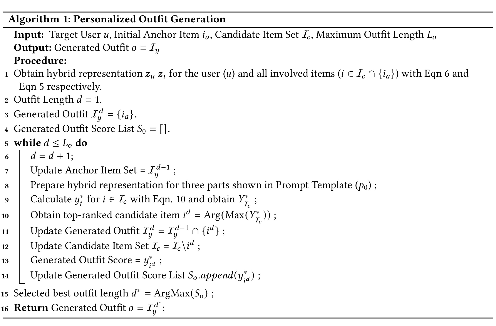
这个算法截图有两个细节值得展开。第一，POG 的每一步都重新把已生成 item 作为 anchor set，等于把生成过程转成一系列 P-FITB-like 的补全决策。这样可以复用训练时学到的“给定用户和 partial outfit，从候选中选 item”的能力。第二，算法记录每一步的 generated outfit score，并最终选择最佳长度，而不是强制生成到最大长度 L_o。这一点对时尚 outfit 很重要，因为不同真实 outfit 长度不同，强行补满可能产生冗余 item。第三，算法每次选中 item 后都会从候选集合中移除它，避免同一 item 重复出现；但它没有显式写入类别互斥规则，因此后文失败案例里仍可能出现同类 item 冗余。论文后面的失败案例也说明，即使有这个机制，模型仍可能生成不完整或类别冗余；但至少算法层面已经承认“长度选择”是 POG 的一部分。
2.6 方法的无公式理解：CFALR 到底在解决哪三个错位
如果不用公式讲，CFALR 主要在解决三个错位。第一个是语义空间和交互空间的错位。LLM 擅长理解“黑色长靴”和“皮革外套”的风格关系，但不知道平台上哪些用户实际点击、收藏或购买过类似组合；CF embedding 知道行为模式，却不会表达视觉和自然语言语义。CFALR 用 projection layer 和 hybrid token sequence 把 CF/视觉信息接入 LLM，让模型在 attention 里同时看见语义与行为。
第二个是 item-level preference 和 outfit-level compatibility 的错位。用户喜欢某双鞋，不代表它能和当前裙装搭配；两个 item 很兼容，也不代表当前用户喜欢这种风格。CPTM 的三元 score s(u,i,j) 给了一个 user-conditioned item-pair 信号，P-FITB prompt 又把 partial outfit 和 candidate items 放在一起，二者共同让模型学习“个性化补全”而不是单品推荐。
第三个是训练任务和生成任务的错位。训练时最自然的是 P-FITB，因为 ground truth item 可以通过 outfit 中挖空构造候选选择样本；实际应用却常常要 POG，从一个 anchor item 逐步生成完整 outfit。CFALR 的做法是用 P-FITB 训练 LLM 的局部选择能力，再在 POG 中迭代调用这个能力，并用 CF output interpolation 弥补短输入下 LLM 的不稳定。这个思路不追求纯生成模型的开放性，而是保留推荐系统的候选约束和行为信号。
3. 实验结果
3.1 数据集、设置和指标
论文在 Polyvore 和 IQON 两个时尚 outfit 数据集上评估 CFALR。Polyvore 使用 Polyvore-519 版本，用户较多、交互相对更密；IQON 原始规模较大，论文采样保留 10% 用户和每个用户 20% 交互 outfit，以降低训练成本。Table 1 给出数据规模：Polyvore 有 19,968 个 item、519 个用户、36,011 个 outfit、27,012 条 user-outfit interaction，平均 outfit 长度 2.458；IQON 有 34,307 个 item、699 个用户、11,026 个 outfit、6,612 条 user-outfit interaction，平均 outfit 长度 3.703。一个很关键的稀疏性差异是，IQON 每个 item 平均 user-item interaction 只有 1.136，而 Polyvore 是 3.006，这会直接影响 CF 特征质量。
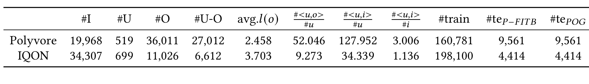
这张表对理解后续结果非常重要。Polyvore 的 outfit 更多、user-outfit 和 user-item 信号更密，因此 CF-based 方法在 Polyvore 上通常更可靠；IQON item 更多、平均 outfit 更长、item 交互更稀疏，CF embedding 更难稳定学习。CFALR 在两个数据集上都要同时面对不同困难：Polyvore 考验模型能否利用较密交互继续提升；IQON 考验模型在 CF 信号弱、outfit 更长时能否依靠 LLM/视觉/用户历史维持泛化。论文的消融结果后面也能看到，CF 特征在 Polyvore 上贡献更明显，而 IQON 上用户历史 item 的帮助更突出。
P-FITB 用 Accuracy 衡量：
符号解释：N_r 是预测正确的测试样本数，N 是所有测试样本数。论文设置候选数 k 为 4、10、20，分别构造不同难度。候选越多，随机命中概率越低，模型越需要精确捕捉用户偏好和 item 兼容性。
POG 用三类重叠指标。Personalization Precision 写成：
符号解释：o_{ui} 是为用户 u 和 anchor item i 生成的 outfit，I_u 是用户喜欢的正向 item 集合。PP 衡量生成 outfit 中有多少 item 属于该用户正向偏好。Outfit Compatibility 和 Mean Pairwise Compatibility 分别写成：
符号解释：OC 把生成 outfit 与数据集中已有真实 outfit 做最大 Jaccard 相似度，用来衡量 outfit-level 兼容性；J(A,B) 是两个集合的 Jaccard similarity。
符号解释：P 是真实 outfit 中出现过的正向 item pair 集合，P_o 是生成 outfit 内所有 item pair，MPC 衡量生成 outfit 内 pairwise compatibility。PP 偏个性化，OC 偏整体与真实套装重叠，MPC 偏 item pair 兼容。论文还额外用 Gemini-3、Qwen-3.6 和三名时尚专家对生成质量打分，维度包括 completeness、compatibility、aesthetics 和 overall。
3.2 P-FITB 主结果
Table 2 是 P-FITB 主结果，baseline 覆盖 CF-based recommendation、LLM、VLM、bundle recommendation。CFALR 在所有数据集和所有候选难度上都是最好：Polyvore 1/4、1/10、1/20 分别为 0.6498、0.3957、0.2459；IQON 1/4、1/10、1/20 分别为 0.6103、0.3654、0.2018。这个结果的强度不只在“最好”，还在它对不同 baseline 类型都形成优势。比如 Polyvore 1/4 最强 baseline 是 Bundle-MLLM 的 0.4775，CFALR 提升到 0.6498；IQON 1/4 最强 baseline 是 Qwen3.5-VL-35B 的 0.5653，CFALR 是 0.6103。
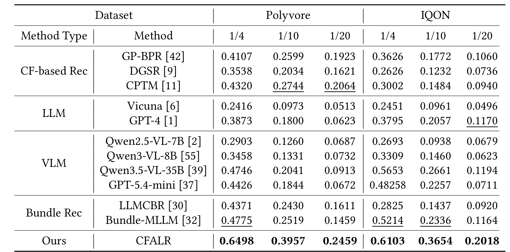
表中有几个值得细读的对比。首先，传统 CF 模型在 Polyvore 上仍然强，CPTM 在 Polyvore 1/20 得到 0.2064，高于很多 LLM/VLM baseline。这证明 outfit recommendation 不是纯语义任务，行为交互仍然有效。但 CF 方法在 IQON 上明显不稳定，CPTM 1/20 只有 0.0940，GP-BPR 也只有 0.1060，这与 IQON item interaction 极稀疏一致。其次，纯 LLM 的表现并不理想，Vicuna 在两个数据集上都很弱，GPT-4 更好但仍远低于 CFALR。说明 off-the-shelf LLM 即使有强语言能力，也不能直接解决候选 item 选择。第三，强 VLM 和 bundle 方法很有竞争力，Qwen3.5-VL-35B 在 IQON 表现尤其强，Bundle-MLLM 在 Polyvore 1/4 也强，但它们缺少 CFALR 这种显式用户历史、CF embedding、候选判别式训练的结合。
我对这张表的判断是：CFALR 的提升主要来自“把 P-FITB 做成真正的推荐判别任务”，而不是简单让 Vicuna 读 prompt。它用 CF features、视觉 features、用户历史 item 和候选交叉熵把 LLM 约束到了候选集合内的选择。尤其在 1/10、1/20 这种候选更难设置下，模型不能只靠大概语义猜测，必须更准确地区分多个相似 item；CFALR 的优势说明 hybrid encoding 和 discriminative loss 确实让模型学到了更细粒度的偏好兼容关系。
3.3 POG 主结果
Table 3 是 personalized outfit generation 结果，指标包括 PP、OC 和 MPC。CFALR 在 Polyvore 上得到 PP 0.2428、OC 0.4626、MPC 0.3556；在 IQON 上得到 PP 0.2883、OC 0.3147、MPC 0.2291，同样在所有指标上最好。与 P-FITB 相比，POG 上 CFALR 与强 CF baseline 的差距变小，例如 Polyvore 上 CPTM 的 PP/OC/MPC 是 0.2314/0.4506/0.3365，已经非常接近。这恰好支持论文动机：POG 输入更短，交互模式建模更重要，传统 CF 在这种场景仍然有强竞争力。
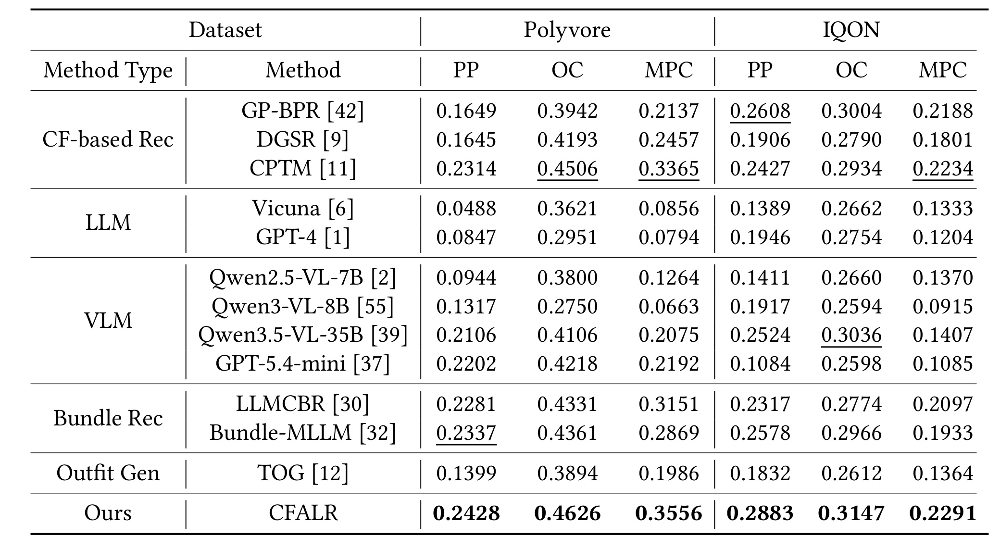
这张表最有价值的地方是展示不同模型族的短板。纯 LLM/VLM 在 POG 上并没有稳定压倒 CF 模型。Vicuna、GPT-4 的 PP 和 MPC 普遍较低，说明它们会生成看似合理但不贴近用户正向 item 或真实 item-pair 的组合。Qwen3.5-VL-35B 和 GPT-5.4-mini 在某些维度上不错，但跨数据集不稳定。Bundle-MLLM 和 LLMCBR 因为任务接近 bundle recommendation，表现相对稳健，但仍不如 CFALR。CFALR 的优势来自双重约束：LLM 负责根据 prompt、视觉和语义理解 outfit，CF augmented output 负责把 item-level preference 拉回行为空间。
从指标角度看，PP、OC、MPC 的提升含义不同。PP 提升说明生成 item 更符合用户历史偏好；OC 提升说明生成集合更接近真实 outfit；MPC 提升说明 item pair 更常见于真实搭配。CFALR 在三者上同时最好，说明它不是只通过生成更长 outfit 提高某个指标，也不是只靠 CF 记忆高频 pair。它在个性化和兼容性之间取得了更好的平衡。论文也指出，IQON outfit 更长，LLM/VLM 倾向生成更多 item，因此在 IQON 某些指标上更有竞争力；但 CFALR 仍然领先，说明输出层插值没有牺牲 LLM 的生成灵活性。
3.4 质量评价与消融
除了重叠指标，论文用 LLM-as-a-judge 和人工专家评价生成 outfit 的 completeness、compatibility、aesthetics 和 overall。Table 4 显示，在 Gemini-3、Qwen-3.6 和 Human Expert 三组评价中，CFALR 的 overall 都最高：Gemini-3 给 CFALR 0.842，明显高于 CPTM 0.537 和 Vicuna-T 0.535；Qwen-3.6 给 CFALR 0.674，高于 Vicuna-T 0.621；人工专家给 CFALR 0.765，高于 Vicuna-T 0.723 和 CPTM 0.518。
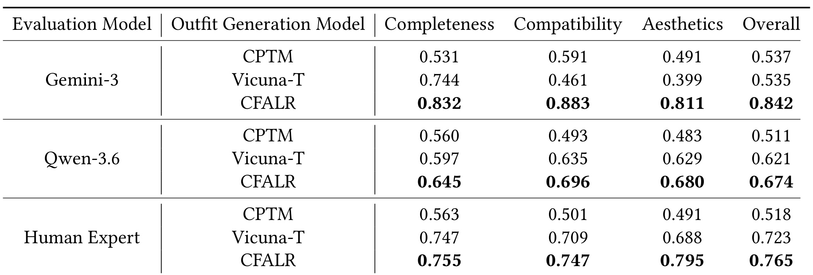
这张表补充了 PP/OC/MPC 的盲点。重叠指标偏向“是否像数据集中已有 outfit”，但新生成 outfit 可能合理却不在 ground truth 里；LLM 和人工评分可以更直接看 completeness、compatibility、aesthetics。CFALR 在 Gemini-3 下 compatibility 0.883、aesthetics 0.811，说明它不只是选中了用户喜欢的 item，也更像完整、协调的穿搭。人工评分里 Vicuna-T 的 completeness 0.747 接近 CFALR 0.755，但 aesthetics 0.688 明显低于 CFALR 0.795，这意味着 fine-tuned LLM 可能生成数量上更完整的 outfit，却仍然容易在审美兼容性上失分。
Table 5 是 hybrid representation 消融。Polyvore 上，完整 CFALR 在 1/4、1/10、1/20 是 0.6498、0.3957、0.2459。去掉视觉和 CF 后降到 0.5820、0.3198、0.1851；只去掉 CF 后是 0.5896、0.3279、0.1873；只去掉视觉后是 0.6142、0.3788、0.2502；去掉用户历史 UH 后是 0.6264、0.3701、0.2207。这个表说明 Polyvore 上 CF 特征很关键，尤其 1/20 困难设置里，w/o CF 从 0.2459 降到 0.1873。
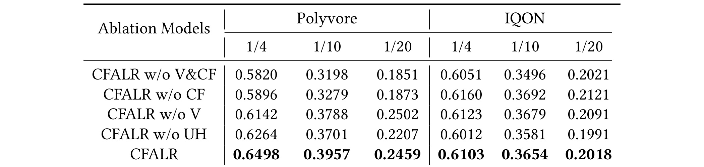
IQON 上的模式更微妙。完整 CFALR 在 1/20 是 0.2018，但 w/o CF 反而是 0.2121，w/o V 是 0.2091，说明 IQON 上视觉和 CF 特征并非总是正贡献。论文解释与 IQON 极端稀疏有关：每个 item 平均只被交互 1.136 次，CF embedding 很难学到稳定模式，可能把噪声带入 LLM。相反，用户历史 UH 的作用更稳定，去掉 UH 后 IQON 1/20 降到 0.1991。我的理解是，CFALR 的“混合”不是无条件相加就好，它依赖输入特征质量；当 CF 预训练数据太稀疏时，projection layer 也无法凭空恢复可靠行为结构。这也是后续工程落地要注意的风险：CF feature 的质量门槛必须监控，并且最好按数据集、用户活跃度或 item 曝光次数动态决定是否启用 CF token。
3.5 学习目标、训练策略和效率
Table 6 比较 CFALR 的判别式 loss 和普通 LM loss。CFALR loss 在所有设置上都优于 LM loss，例如 IQON 1/20 是 0.2018 对 0.1846，Polyvore 1/15 是 0.3117 对 0.2920。这个结果支持前面的方法设计：P-FITB 本质上是候选集合内选择，不是开放文本生成。普通 LM loss 会让模型在整个 corpus/token space 上优化生成概率，目标太散；CFALR loss 把优化集中在候选 item logits 上，更像推荐排序。尤其在候选数变多时，模型需要比较多个相似 item 的相对优劣，而不是生成一个语义上通顺的答案，因此判别式目标更贴合评估方式。
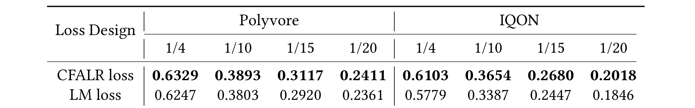
Table 7 比较五种训练策略。T_2，也就是先训练 LoRA 的 text-only 阶段，再只优化 projection layers 的策略，是论文默认且整体最稳的选择；Polyvore 1/4、1/10、1/20 为 0.6498、0.3957、0.2459，IQON 1/4、1/10、1/20 为 0.6103、0.3654、0.2018。T_3 在 Polyvore 1/15 上略高，但 IQON 不如 T_2。T_4 joint one-stage training 很差，Polyvore 1/20 只有 0.0466。这个差距比一般调参波动大得多，说明 projection 层和 LoRA 同时从不稳定状态学习时，模型很难把非文本 token 解释成可靠推荐信号。
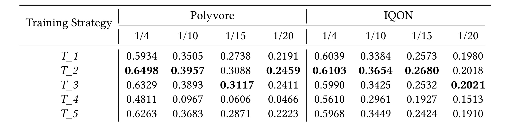
这个结果证明“空间对齐”不是小细节。projection layer 一开始还没学会把视觉/CF 向量映射成 LLM 可理解的 token embedding，如果同时大幅调整 LoRA 和 projection，LLM 看到的输入分布会不断变化，任务学习和特征对齐互相干扰。T_2 的强势说明更稳妥的做法是先让 LLM 适应任务语言，再固定或少动 LoRA，把非文本特征对齐到已适配的语义空间。对稀疏数据集 IQON，T_2 比 T_3 更好，也说明参数越多不一定越好；少量可靠可训练参数可能比同时更新 LoRA+projection 更抗噪。
Table 8 给出推理时间：CPTM 0.02 秒，Vicuna-7B 0.12 秒，Qwen3-VL-8B 0.17 秒，CFALR 0.21 秒。CFALR 明显慢于传统 CF，但仍在约 200ms 量级。这个延迟对离线搭配生成、候选重排或 near real-time 推荐可能可接受；但如果要在大规模召回层直接跑，就不现实。更合理的工程位置是：先用轻量召回/CF/规则筛出较小候选集合，再用 CFALR 做精排或生成式补全。还要注意，POG 是多步生成，单步 0.21 秒会随生成长度累积，真实系统中需要缓存 item 表示、批量计算候选分数，并限制候选集合规模。
这张表也提醒我们，CFALR 不是“免费的精度提升”。它同时跑 LLM、projection 和 CF augmentation，推理开销比 CPTM 高一个数量级。论文认为 0.21 秒仍可接受，但真实系统还要考虑 batch、候选规模、用户并发、视觉特征预计算、缓存策略和 LLM 部署成本。如果只是 P-FITB 精排，缓存 item hybrid embeddings 和 user CF embeddings 可以降低开销；如果是 POG，多步生成会把 0.21 秒乘以生成步数，延迟压力更大。因此 CFALR 更适合作为小候选集合上的精排/生成模块，而不是替代召回层或全量检索层。部署时还应把候选截断、向量缓存和异步重排作为模型方案的一部分，而不是只比较单样本延迟。
3.6 CF 增强权重、prompt 与用户历史长度
Figure 2 分析 Eq.10 中 \lambda 的影响。图中在 IQON 和 Polyvore 两个数据集上展示 PP、OC、MPC 随 \lambda 变化的趋势。论文结论是，\lambda 在 0.4 左右通常最优；\lambda=1 表示只用 fine-tuned LLM，表现反而下降；加入 CF augmentation 后，三个指标普遍优于纯 LLM。这与方法动机一致：POG 输入短，LLM 难以充分发挥复杂上下文理解，CF 可以直接补足 item-level interaction pattern。
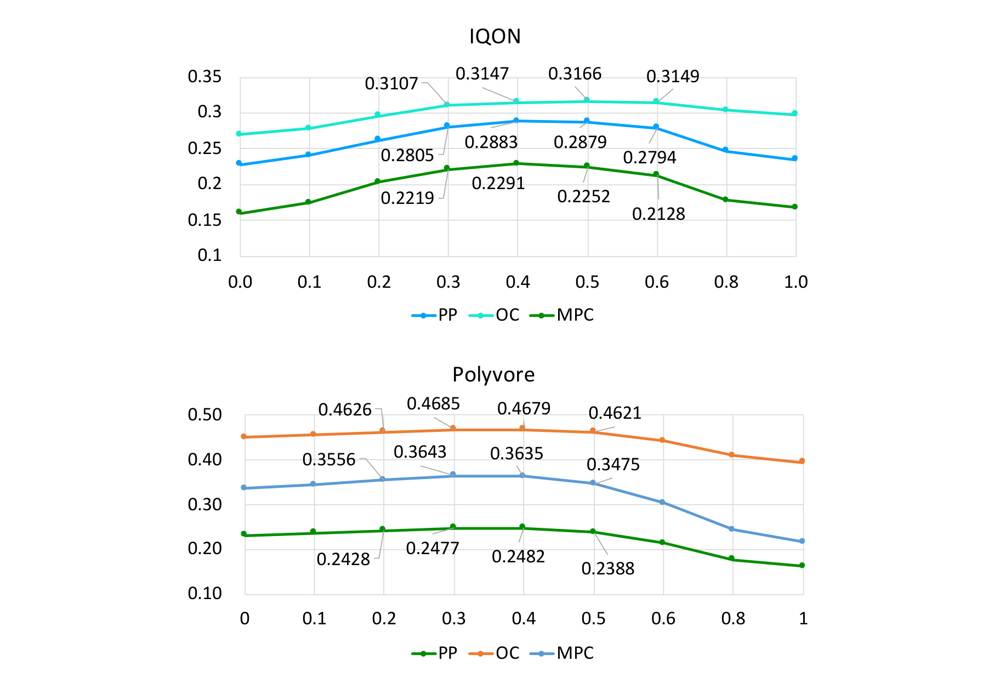
这张图的读法是：横轴是 \lambda，越大越偏 LLM；纵轴是 PP/OC/MPC。Polyvore 上 \lambda=0.4 附近 PP 约 0.2482、OC 约 0.4679、MPC 约 0.3635，比 \lambda=1 时更好；IQON 上 \lambda=0.4 附近 OC 最高到 0.3166，PP/MPC 也处于较优位置。它说明 CF 和 LLM 不是简单谁替代谁，而是存在组合权重。若过度依赖 CF，模型可能缺少语义和生成灵活性；若过度依赖 LLM，模型又会丢掉行为空间约束。0.4 不是普适常数，但它证明中间插值区域比两端更有价值。
Figure 3 左边比较 prompt template，右边比较 user encoding 中历史 item 数量。prompt 方面，Emotion、Re-reading、RolePlay-Expert 和论文自定义模板差异不大，说明 CFALR 对 prompt engineering 相对鲁棒。历史 item 数方面，准确率从 1 个历史 item 的 0.3931 上升到 5 个历史 item 的 0.4029，之后 7、9、11 个 item 收益趋于平台或轻微下降。
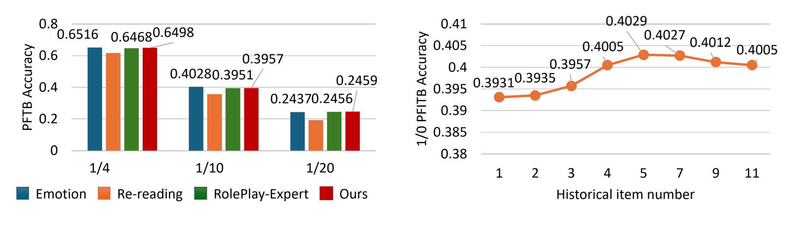
这张图对工程实现很有参考价值。首先，prompt 模板不是主要瓶颈。只要任务边界表达清楚，模型性能更多来自 hybrid representation、训练目标和 CF augmentation，而不是靠花哨 prompt。其次，用户历史长度存在边际收益递减。历史 item 太少，模型难以把握个性偏好；历史太多，token 成本上升，还可能引入风格漂移或噪声。论文最终选择 Polyvore 5 个历史 item、IQON 3 个历史 item，是在精度和效率之间折中。对真实业务来说，这意味着 user profile 应该做代表性采样或聚类摘要，而不是无脑塞入最近 N 个 item；同时也要监控用户兴趣迁移，避免旧历史在季节、场景或风格变化后误导模型。
3.7 长度、模板、输入类别和案例分析
Figure 4 分析 outfit length。图中比较 CFALR、CPTM、GPT 和 Vicuna 在 outfit 长度为 2、3、4 时的 PP、MPC、OC。论文观察到 PP 和 MPC 对长度更敏感，OC 相对稳定；较短 outfit 反而更难，可能因为少量 item 中每个选择错误都会造成更大比例损失。CFALR 在不同长度上都优于其他方法，说明它不是只适合某一种固定长度。
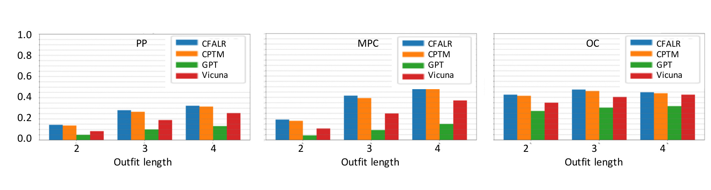
这张图里的一个细节是，GPT 和 Vicuna 在多数组合上明显落后，尤其 PP 和 MPC。它们可能能从语言常识上组合“看起来合理”的衣物，但不擅长命中用户正向 item，也不稳定遵循真实 pair compatibility。CPTM 在某些长度上接近 CFALR，说明 CF 对 POG 仍很强。CFALR 的优势在于把 CF 的稳定性和 LLM 的语义/生成能力结合起来，面对不同长度时没有明显崩溃。
Figure 5 分析 outfit template ID。横轴是 24 种 template，纵轴分别是 PP、MPC、OC。CFALR 在所有 template 上整体最强，但论文也承认某些 template 上 CPTM 与 CFALR 接近甚至超过，例如 template 3、7、9、14、21、24。这些 template 往往不常见或不完整，CPTM 更依赖数据拟合，可能不受“模板不合理”影响；CFALR 的 LLM 部分会倾向生成更符合常识的 outfit，因此在异常 template 上可能不完全贴合 ground truth。
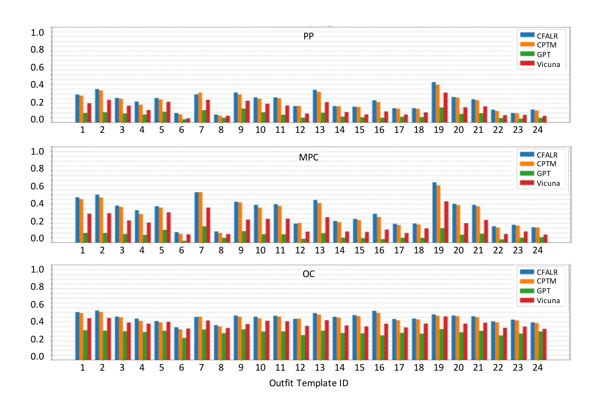
这张图说明 CFALR 的强项和边界都很清楚。强项是跨模板稳定，说明它没有被某个模板集合完全绑死；边界是当评价 ground truth 本身来自不常见或不完整模板时，LLM 的常识可能与数据集标签冲突。这个现象对推荐系统很重要：离线指标未必总奖励“更合理”的搭配，有时会奖励历史数据里的特殊模式。因此真实上线时，除了 PP/OC/MPC，还应加入人工审美、规则约束和用户反馈来判断生成 outfit 是否真的可用。
论文还分析了输入 item category、成功案例和失败案例。Figure 6 显示，输入 item 类别的影响小于长度和模板；top、pants、one-piece 这类基础单品通常更容易生成，outerwear、shoes 等类别可能带来更多约束。Figure 7 的成功案例显示，CFALR 能比 Vicuna、GPT4、Vicuna-T、CPTM 生成更完整且与 anchor 更兼容的 outfit；论文特别提到 fine-tuning 可缓解 vanilla LLM 的 positional bias，避免总选候选列表前面的 item。Figure 8 的失败案例则揭示两个残留问题：一是只预测一个额外 item，导致 outfit 不完整；二是生成多个 item 但出现类别冗余，例如两件 bottom wear。虽然本轮未把 Figure 6-8 截入正文，paper_audit.json 已记录这些对象及省略原因；这些结论仍来自 PDF 正文并在这里作为实验边界解释。
4. 总结
4.1 我的判断
CFALR 的价值在于它没有把 LLM 推荐讲成“语言模型更聪明，所以能推荐”，而是认真处理了推荐系统最核心的交互空间问题。论文承认 CF 在行为建模上的优势，也承认 LLM 在复杂语义和开放组合上的优势，然后分别在输入编码和输出生成层做融合。对 personalized fashion outfit recommendation 这种任务，单纯 CF、单纯 LLM、单纯模板都不完整：CF 容易稀疏和 cold-start，LLM 容易脱离 item ID 交互空间，模板方法容易过度依赖固定类别结构。CFALR 的 hybrid encoding、判别式候选 loss、两阶段训练和 CF output interpolation，正好对应这些痛点。
我认为最值得借鉴的是两阶段训练和输出层插值。两阶段训练不是工程细枝末节，而是解决 LLM token space 与视觉/CF latent space 对齐的关键；Table 7 中 joint training 的崩溃说明，非文本特征接入 LLM 时必须先稳定空间。输出层插值则是一种非常朴素但有效的 RAG-like 思路：当生成任务输入不足时，不要强迫 LLM 独自完成推荐，而是在 logits/probability 层把专门推荐器的分数引进来。这个思路可推广到其他生成式推荐场景，例如音乐歌单、商品 bundle、内容合集或多 item 广告组合。
4.2 局限与后续跟进
第一，CF feature 的质量依赖交互密度。IQON 上 w/o CF 不一定差于完整模型，说明当 item interaction 极稀疏时，CF embedding 可能带来噪声。后续应增加 CF feature confidence 或按用户/item 冷启动程度动态调节 \lambda 和 feature 权重，而不是固定使用同一套融合策略。
第二，POG 的结构约束仍不充分。失败案例显示模型可能生成不完整 outfit 或类别冗余，这说明 Eq.10 的概率插值不能保证组合规则。工程上可以加入 category coverage、互斥类别、最大/最小长度、场景约束等 constrained decoding，或者把 template 作为软约束而不是硬模板。
第三，评价指标仍偏离真实审美。PP、OC、MPC 依赖历史正样本和真实 outfit 重叠，可能惩罚创新但合理的搭配，也可能奖励数据集里的不完整模板。论文加入 LLM 和人工评分是好方向，但 70 个样本规模有限，且 LLM judge 与人工专家之间仍可能有偏差。后续应加入在线点击、收藏、加购、退货或用户编辑反馈。
第四，计算成本需要更具体的系统分析。0.21 秒单样本延迟看起来可接受，但 POG 是多步生成，且真实候选集合可能很大。若要上线，需要明确候选召回规模、embedding 缓存、batch 推理、CF 分数预计算、LLM quantization 和多 GPU 资源成本。论文没有给出端到端吞吐和内存占用，这会影响工程可行性判断。
第五，论文没有核验开源代码。方法细节虽然完整，但复现仍需要数据预处理、CPTM triplet 构造、prompt 组装、projection layer 接入 Vicuna、LoRA 训练、POG candidate sampling 等多个环节。后续如果代码发布，应重点检查 Algorithm 1 中第 11 行生成集合更新是否按 union 实现、\lambda 插值是否在同一候选归一化空间、以及 Table 7 的训练策略是否能稳定复现。
后续我会重点跟进三件事。其一，看作者是否发布代码或补充材料，尤其是 CPTM 预训练和 hybrid embedding 拼接的实现。其二，比较 CFALR 与近期 LLM4Rec/MLLM bundle recommendation 在更大候选集合和 cold-start item 上的表现，确认优势是否来自任务适配还是数据集设置。其三，关注 constrained decoding 与用户可交互反馈如何接入 CFALR，因为真实 outfit 推荐不只是一次性生成，而常常是用户不断替换某个单品、固定某个颜色或指定场景的交互式过程。总体来看，CFALR 是一篇把 LLM 生成能力和推荐系统行为建模结合得较具体的论文，实验覆盖也较完整；但它距离工业级个性化搭配生成，还需要更强的结构约束、动态融合权重和真实用户反馈闭环。